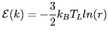
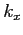
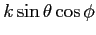
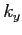
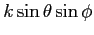
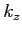
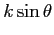

In this paragraph, we explain how GNU Archimedes specifies the initial conditions for the super-particles. Concerning the spatial distribution, this is trivially done according to the donor (resp. acceptor) profile density specified by the user in the input file for the electrons (resp. holes). Concerning the distribution in the pseudo-wave vector space, things are a little bit more complex. We have to specify an initial particle distribution in the k-space. This is done in the following way. We consider all the particles, at the initial time of the simulation, nearly the thermal equilibrium, which means that the energy of a particle reads
|  | (5.13) |
Once we have specified the energy of the electrons, then we can choose the pseudo-wave vectors of all particles. This is done, trivially, by the following algorithm.
|  |  | (5.14) | |
|  |  | (5.15) | |
|  |  | (5.16) |